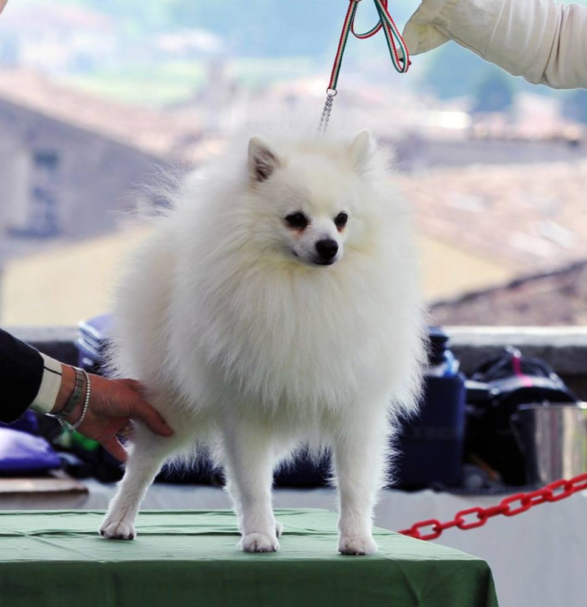

Upcoming Dog Shows
- 26.11.2017 Hau-Hau Dog Show 2017 - Tampere KV
- 8.-10.12.2017 Helsinki Winner 2017
- 13.-14.01.2018 Kajaani KV 2018
- 20.-21.01.2018 Turku Winter Dog Show 2018
- 24.-25.03.2018 Lahti KV
- 31.03.-02.04.2018 Lappeenranta KV
- 14.-15.04.2018 Vaasa KV
- 06.05.2018 Hau-Hau Dog Show 2018 - Tampere KV
- 26.05.2018 Joensuu KV